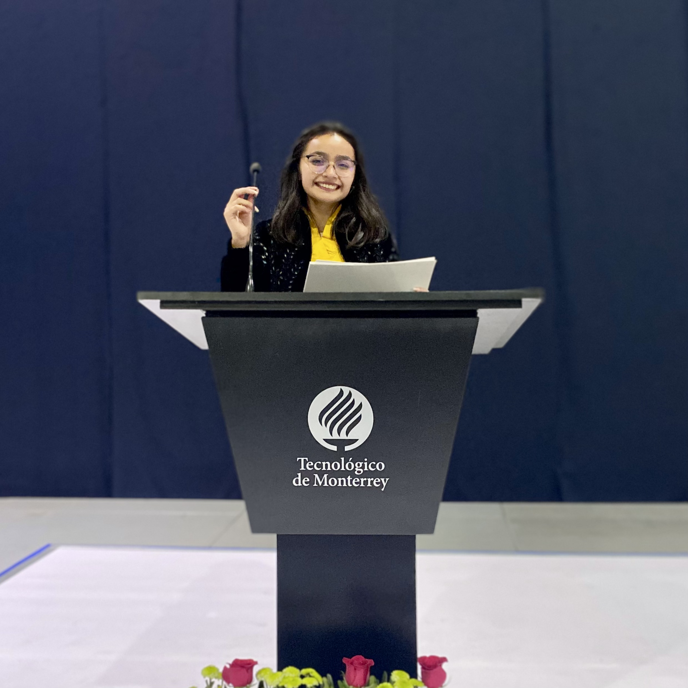
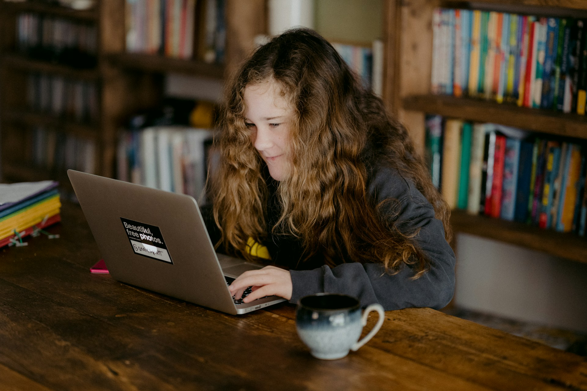

Historia
En el año 2021, durante la pandemia por la COVID-19, se realizó el primer curso
"Una probadita a 1ro de secundaria" con la finalidad de introducir a los estudiantes
de 5to y 6to de primaria a los temas que se imparten en 1ro de secundaria. En el
diagnóstico inicial se evidenció que el grupo sostenía un promedio de calificación de
47/100. Con la implementación del curso se obtuvo un promedio de calificación final
de 96/100 sin ninguna calificación reprobatoria. Es así como nace Logaritmia MX,
buscando generar un impacto positivo en la educación de los estudiantes
mexicanos.
Desde entonces, Logaritmia MX ofrece asesorías personalizadas diseñadas para
adaptarse al ritmo de aprendizaje de cada estudiante y que se enfocan en alcanzar
los diferentes objetivos de cada uno de ellos, como repasar temas de su grado
escolar, estudiar para un examen próximo, reforzar los conocimientos del estudiante
o adentrarse en el mundo de las matemáticas.
Gracias a lo recaudado por dichas asesorías personalizadas y a nuestros
voluntarios, en Logaritmia MX podemos cumplir con nuestro objetivo de llevar
nuestros programas de aprendizaje STEAM a todas las comunidades.

STEAM
El enfoque educativo STEAM se centra en el estudiante y es distinguido por
integrar el arte, la ciencia y la tecnología. Su objetivo es que los estudiantes
puedan comprender y aplicar los temas en la vida ctidiana, más allá de
memorizarlos.
S: Science (Ciencia)
T: Technology (Tecnología)
E: Engineering (Ingeniería)
A: Arts (Arte)
M: Mathematics (Matemáticas)
La tecnología y las ciencias tienen la finalidad de preparar a los estudiantes
para crear e idear soluciones innovadoras que les permitan resolver problemas.
Por otro lado, el elemtento artístico busca fomentar la creatividad, la expresión
de emociones y la comunicación de los conocimientos.

Por un futuro mejor

Al adquirir un paquete de asesorías personalizadas con
Logaritmia MX, no solo estás invirtiendo en el futuro de
tus hijos, sino que también estás becando a grupos de
estudiantes vulnerables para adentrarse en el mundo de
STEAM a través de nuestros programas sociales.